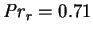
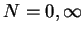
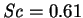
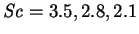
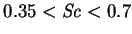
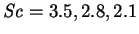
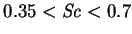

Béghein et al. (1992) performed an extensive series of numerical solutions
to test the two-dimensional
scale analysis of Bejan (1985; §3.3.5). They
neglected three-dimensional (
 ) and finite mass transfer
rate effects (
) and finite mass transfer
rate effects ( ) and considered square cavities (
) and considered square cavities (
 ) for a
Prandtl number appropriate to air (
) for a
Prandtl number appropriate to air (
 ).
).
The first part of the paper is rather redundant since the Schmidt number was set equal to the Prandtl number, so that the problem becomes mathematically identical to the analogous single fluid heat transfer problem (§2.4). Nevertheless, the results, gathered from their table 3, are plotted as upright triangles in figures 3.1 and 3.2.
Further series of runs were carried out with  and Schmidt numbers ranging from 0.21 to 3.5 for purely thermal or compositional buoyancy forces (). The finite vertical aspect ratio of the cavity was found to cause a discrepancy between the results and Bejan's (1985) predictions. The simple one-dimensional scale analysis is incapable of fully describing two-dimensional vapour transport. The difficulties are most pronounced for Schmidt numbers in the range [0.35,0.7], which is unfortunate, as this includes many vapours of interest, such as water vapour ( ). A modification of Bejan's analysis to take account of Prandtl and Schmidt numbers of near unit magnitude and the finite height of enclosures is discussed in §3.3.16.
Béghein et al. reported the mean Sherwood number of the results at  (table 4) and the mean Nusselt number for
(table 4) and the mean Nusselt number for  (table 5);
these are plotted as inverted
triangles in figures 3.1 and 3.2,
respectively. The four lowest of these points in
figure 3.2 are not at all well represented by
(3.4). These are the points corresponding to Schmidt numbers
larger than unity (
 and 1.4). The other six values,
corresponding to
, lie quite close to the curve. This
behaviour is not unexpected (§3.3.16).
(table 5);
these are plotted as inverted
triangles in figures 3.1 and 3.2,
respectively. The four lowest of these points in
figure 3.2 are not at all well represented by
(3.4). These are the points corresponding to Schmidt numbers
larger than unity (
 and 1.4). The other six values,
corresponding to
, lie quite close to the curve. This
behaviour is not unexpected (§3.3.16).